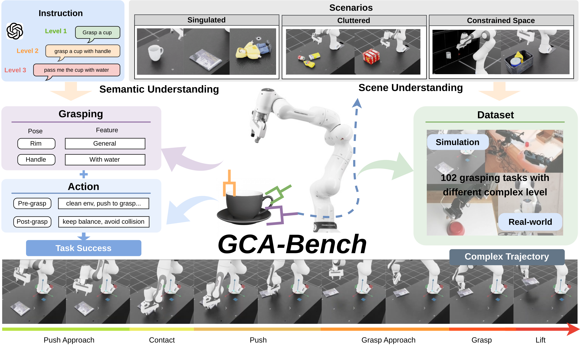
Robust robotic grasping remains a fundamental challenge for complex real-world applications. Existing benchmarks primarily focus on isolated visual grasp pose detection, leaving out tasks that require multi-step reasoning, semantic understanding, and reliable execution. GCA-Bench addresses this gap with challenging complex action scenarios that combine scene-level reasoning and semantic constraints. The benchmark evaluates recent foundation-model and grasping baselines under shared settings, with results showing success rates below 70% on complex grasping scenarios. GCA-Bench also introduces execution-aware metrics and failure analysis to guide more robust, generalizable grasping systems.
GCA-Bench evaluates complex robotic grasping as a full pipeline rather than a single grasp pose prediction problem. It combines language instructions, semantic and scene understanding, trajectory-level execution, and task-specific constraints across 102 grasping tasks in singulated, cluttered, constrained, and semantic scenarios.
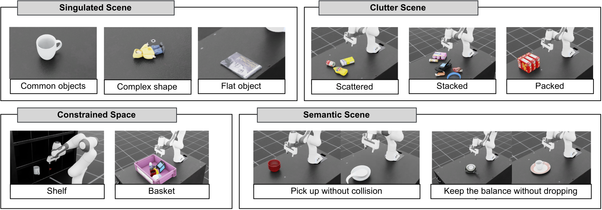
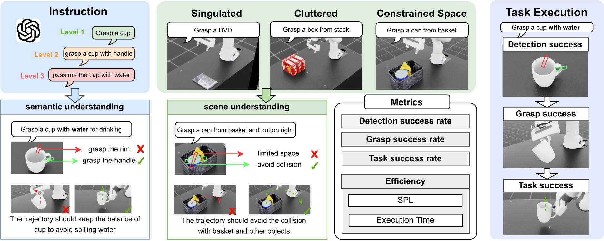
The benchmark uses NVIDIA Isaac Lab with a Franka Emika Panda setup and four RGB-D viewpoints: wrist, front, side, and over-the-shoulder. For fine-tuning and analysis, the dataset includes manually demonstrated trajectories with 2000 simulation trajectories and 800 trajectories from real robots.
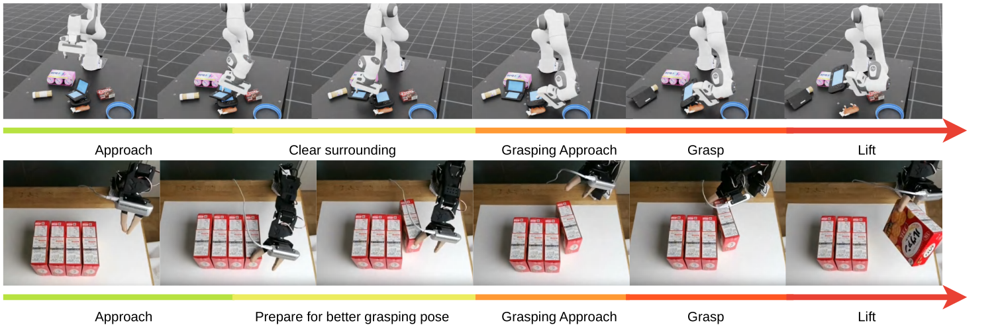
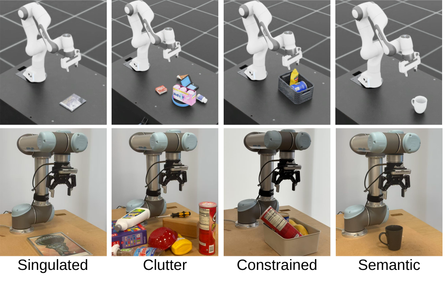
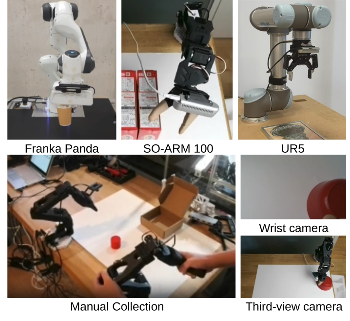
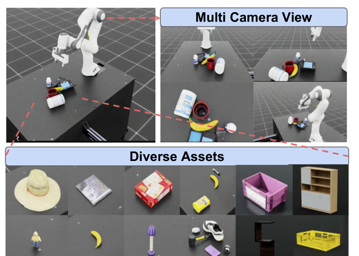
GCA-Bench compares grasp detection pipelines, motion-planning variants, and VLA policies. Detection-based methods remain brittle in complex scenes, while fine-tuned VLA models improve results but still degrade as task complexity increases, especially under semantic constraints.
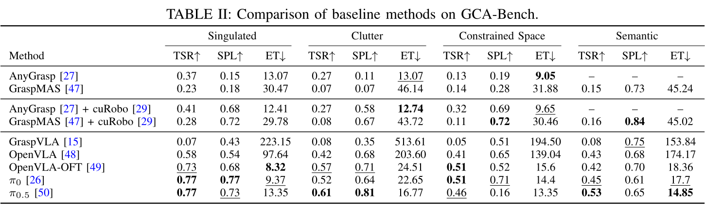
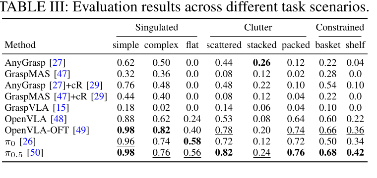
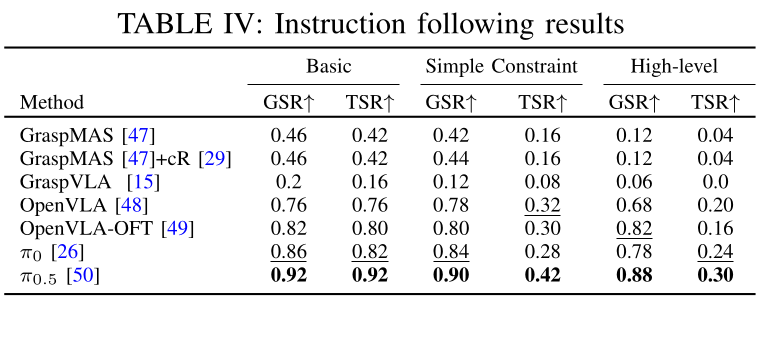
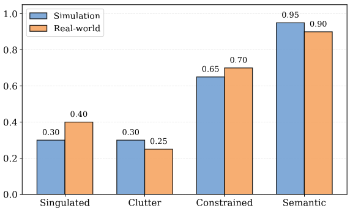
GCA-Bench exposes a persistent gap between perception and reliable execution. Even when targets are detected, stable grasping can fail because of occlusion, thin or slippery objects, constrained motion, missing feedback, and semantic constraints such as preserving balance or avoiding unsafe contact. The benchmark is designed to support future evaluation of closed-loop, language-conditioned, and execution-aware robotic grasping systems.
@inproceedings{zhang2026gcabench,
title={Beyond Visual Grasping: Benchmarking Complex Grasping from Detection to Execution},
author={Zhang, Hanyi and Nguyen, Khang and Munasinghe, Charith and Hela, Basu and Li, Tianyu and Luo, Zihong and Nguyen, Hoan and van de Venn, Hans Wernher and Zheng, Yalin and Prakash, Ravi and Ta, Tung D. and Nguyen, Anh and Huang, Baoru},
year={2026},
booktitle={IEEE/RSJ International Conference on Intelligent Robots and Systems (IROS)}
}